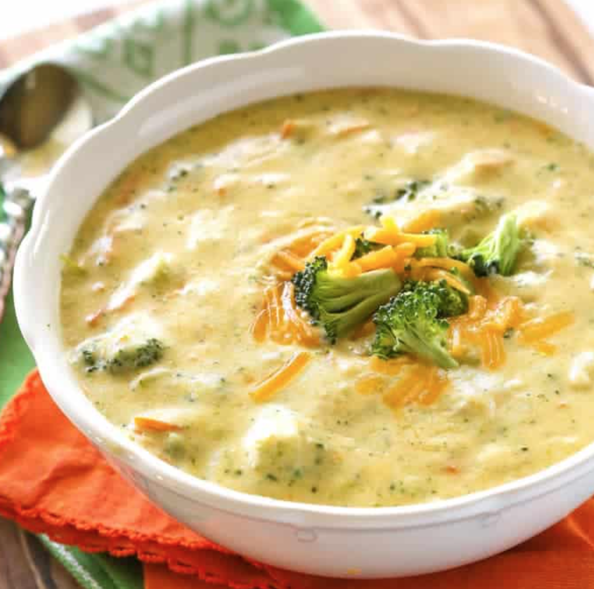

Panera's Brocolli Cheddar Soup
Back to all recipes

Description
Creamy broccoli cheddar soup is comfort food at its best and this Panera's Broccoli Cheddar Soup is an easy dinner that hits the spot.
This soup will take about 10 minutes to prep and 25 minutes to cook.
Ingredients
- 1/4 cup melted butter
- 1/2 medium chopped onion
- 1/4 cup flour
- 2 cups half-and-half cream
- 2 cups chicken stock or broth
- 1/2 lb broccoli, (about 3 cups), chopped into bite size pieces
- 1 cup carrot, , julienned (can buy matchstick carrots in produce section)
- 1/4 teaspoon nutmeg, (optional but brings out the flavor)
- 8 ounces grated sharp cheddar cheese, (2 cups)
- salt and pepper
Steps
- Melt the 1/4 cup butter and sautee the onions in it until soft. Sprinkle the flour over the mixture. Cook and stir over medium heat for 1-2 minutes.
- Whisk in the half & half and chicken stock.
- Add the broccoli and carrots. Cook over low heat for 20-25 minutes or until the broccoli and carrots are tender.
- Add salt and pepper. You can leave the soup chunky or blend about 1 cup of the soup and stir it in for a smoother soup (that's what I do). Return to low heat and add the cheese. If your heat is too high your soup can get grainy. Stir in the nutmeg if desired.
- Serve with crusty bread.
Back to all recipes